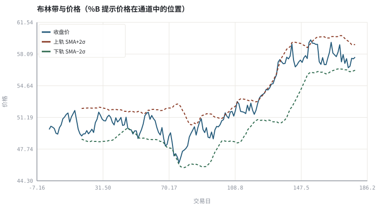
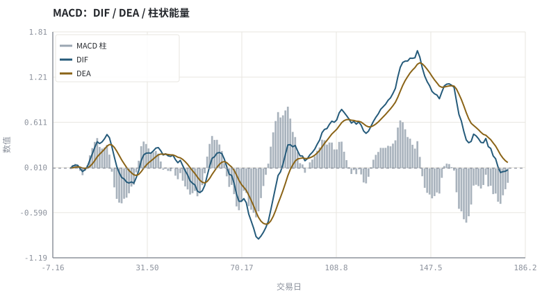

第 18 章MACD、RSI、布林带与 KDJ 的数学定义
每个指标都是价格序列上的一个确定性变换；先写公式，再谈用法。
本章位置：第 17 章的单条均线在这里扩展成指标族；第 19 章 · 形态识别：从主观描述到可判定规则 把多根 K 线组合写成形态判定，第 20 章 · 用代码画图：SVG 图与看图陷阱 则检查这些计算有没有偷看未来。
指标是有状态的流式算子：ema 是递归滤波，RSI 是带衰减的涨跌比，布林带是滑动窗口的 z-score。它们共享同一个输入流，因此不是独立投票。
- 能写出 MACD、RSI、布林带、KDJ 的计算式与初始化方式。
- 能说明指标的参数、滞后与自相关来源。
- 能识别指标共用同一价格序列导致的信号相关性。
- 能用标准库实现四个指标并核对数值。
§知识点地图
每个知识点都配了 1～2 个扩展学习链接；本章完整资源清单见 扩展学习。
| # | 知识点 | 扩展学习 | 状态 |
|---|---|---|---|
| 1 | EMA 与 MACD | MACD · Moving average | 正文已覆盖 |
| 2 | DIF / DEA / 柱状图 | MACD · Relative strength index | 正文已覆盖 |
| 3 | RSI 与 Wilder 平滑 | Relative strength index · Stochastic oscillator | 正文已覆盖 |
| 4 | 布林带与 %B | Bollinger Bands · Normal distribution | 正文已覆盖 |
| 5 | KDJ 与 RSV | Stochastic oscillator · Relative strength index | 正文已覆盖 |
| 6 | 指标滞后 | MACD · Relative strength index | 正文已覆盖 |
| 7 | 参数与自相关 | Diversification (finance) · Modern portfolio theory | 正文已覆盖 |
| 8 | 指标不是独立证据 | MACD · Relative strength index | 正文已覆盖 |
§18.1MACD：两条 EMA 之差
DIF = EMA_12(P) − EMA_26(P) | DEA = EMA_9(DIF) | MACD 柱 = 2 × (DIF − DEA)
MACD 是趋势的二阶差分：DIF 衡量快慢均线距离，DEA 再平滑一次，柱状图是两者之差。它继承了均线的滞后，柱的符号变化比金叉更早，但假信号也更多。初始化方式（前 n 期用 SMA 还是首值递推）会造成数值差异，对照交易 App 时必须先对齐初始化口径。
§18.2RSI、布林带与 KDJ
RSI = 100 − 100/(1 + RS) ，RS = 平均涨幅 / 平均跌幅（Wilder 平滑）
布林: 上/下轨 = SMA_20 ± 2σ_20 | %B = (P − 下轨)/(上轨 − 下轨)
RSV = (C − L_n)/(H_n − L_n) × 100 ，K = (2/3)K' + (1/3)RSV
| 指标 | 回答的问题 | 隐含假设 | 典型失效 |
|---|---|---|---|
| MACD | 趋势动量是增强还是衰减 | 趋势有延续性 | 震荡市反复交叉 |
| RSI | 涨跌幅度是否失衡 | 均值回复 | 单边趋势中长期超买 |
| 布林带 | 波动是否异常扩张/收缩 | 波动有聚集性 | 突破后波动状态切换 |
| KDJ | 收盘价在近期区间的位置 | 区间震荡 | 强趋势中高位钝化 |
四个指标都是同一条价格序列的函数，因此它们高度相关，「三指标共振」不是三个独立证据，而是同一份信息被数了三遍。
§18.3从指标到证据还差什么
指标给出的是描述统计量，不是收益预测。要变成策略，至少还需要：明确的信号定义、无未来函数的执行时点、成本、样本外检验与多重检验修正。第 20 章先解决未来函数，第 26～28 章补齐回测与统计检验。
§Python 分析实例
实验 18-1 · 四个指标的手写实现与共振检查
#!/usr/bin/env python3
# -*- coding: utf-8 -*-
"""用标准库计算 MACD、RSI、布林带、KDJ，并统计超买超卖与交叉次数。
数据为合成数据或模型示意，仅用于教学，不构成投资建议。
"""
from __future__ import annotations
import math
import pathlib
import random
import statistics
import sys
sys.path.insert(0, str(pathlib.Path(__file__).resolve().parents[3] / "tools"))
from chart import Chart, candlestick, heatmap, BLUE, RED, GREEN, AMBER
FIG = pathlib.Path(__file__).resolve().parents[1] / "fig"
FIG.mkdir(exist_ok=True)
random.seed(7)
# ---- 参数区 ----
N = 180
START = 50.0
DRIFT, VOL = 0.0008, 0.012
FAST, SLOW, SIGNAL = 12, 26, 9
RSI_N, BOLL_N, KDJ_N = 14, 20, 9
# ---- 计算与作图 ----
rng = random.Random(7)
px, prices = START, []
for _ in range(N):
px *= (1 + rng.gauss(DRIFT, VOL))
prices.append(px)
def ema(series, w):
a, out, prev = 2.0 / (w + 1), [], series[0]
for v in series:
prev = a * v + (1 - a) * prev
out.append(prev)
return out
dif = [a - b for a, b in zip(ema(prices, FAST), ema(prices, SLOW))]
dea = ema(dif, SIGNAL)
hist = [2 * (a - b) for a, b in zip(dif, dea)]
changes = [prices[i] - prices[i - 1] for i in range(1, N)]
gains = [max(c, 0.0) for c in changes]
losses = [max(-c, 0.0) for c in changes]
ag, al = statistics.fmean(gains[:RSI_N]), statistics.fmean(losses[:RSI_N])
rsi = [None] * N
for i in range(RSI_N, N):
ag = (ag * (RSI_N - 1) + gains[i - 1]) / RSI_N
al = (al * (RSI_N - 1) + losses[i - 1]) / RSI_N
rsi[i] = 100.0 if al == 0 else 100 - 100 / (1 + ag / al)
upper, lower, pct_b = [None] * N, [None] * N, [None] * N
for i in range(BOLL_N - 1, N):
win = prices[i + 1 - BOLL_N:i + 1]
m, s = statistics.fmean(win), statistics.pstdev(win)
upper[i], lower[i] = m + 2 * s, m - 2 * s
pct_b[i] = (prices[i] - lower[i]) / (upper[i] - lower[i]) if upper[i] > lower[i] else 0.5
k, d, j = [None] * N, [None] * N, [None] * N
kp, dp = 50.0, 50.0
for i in range(KDJ_N - 1, N):
win = prices[i + 1 - KDJ_N:i + 1]
hi, lo = max(win), min(win)
rsv = 100 * (prices[i] - lo) / (hi - lo) if hi > lo else 50.0
kp, dp = (2 * kp + rsv) / 3, (2 * dp + kp) / 3
k[i], d[i], j[i] = kp, dp, 3 * kp - 2 * dp
def clean(series):
xs = [i for i, v in enumerate(series) if v is not None]
return xs, [series[i] for i in xs]
xu, yu = clean(upper); xl, yl = clean(lower)
c = Chart(FIG / "18-indicators.svg", "布林带与价格（%B 提示价格在通道中的位置）",
xlabel="交易日", ylabel="价格")
c.line(range(N), prices, BLUE, label="收盘价")
c.line(xu, yu, RED, label="上轨 SMA+2σ", dash="5 4")
c.line(xl, yl, GREEN, label="下轨 SMA−2σ", dash="5 4")
print("布林图:", c.save())
m = Chart(FIG / "18-macd.svg", "MACD：DIF / DEA / 柱状能量", xlabel="交易日", ylabel="数值")
m.bars(range(N), hist, "#9aa6b2", label="MACD 柱")
m.line(range(N), dif, BLUE, label="DIF")
m.line(range(N), dea, AMBER, label="DEA")
m.hline(0.0, "#8a909b")
print("MACD 图:", m.save())
cross = sum(1 for i in range(1, N) if (hist[i - 1] <= 0 < hist[i]) or (hist[i - 1] >= 0 > hist[i]))
over = sum(1 for v in rsi if v is not None and v > 70)
under = sum(1 for v in rsi if v is not None and v < 30)
print("RSI=%.2f K=%.2f D=%.2f J=%.2f %%B=%.3f | RSI>70 共%d 天 <30 共%d 天 柱变号%d 次" %
(rsi[-1], k[-1], d[-1], j[-1], pct_b[-1], over, under, cross))操作：把 RSI_N 从 14 改成 5，观察超买超卖天数；注意所有指标都来自同一条 prices。 预期与判读：四个指标都是价格序列的确定性变换，彼此高度相关。参数一变信号计数就变，所以「共振」必须先声明参数并做样本外检验。
改参数看趋势：把 DRIFT 提高，观察 RSI 在单边趋势里长期停留在超买区（指标钝化）。 文件位置：part3/18-indicators/code/18-indicators.py


代码块右上角可一键复制；仓库里的 code/*.py 由 tools/extract_code.py 从这些代码块自动抽取。脚本只用标准库、固定 random.seed(7)，运行后写出 fig/*.svg；批量运行用 ./tools/run_python.sh。
§本章参考资料
按本章知识点挑选的精读资料；更多检索入口见 扩展学习。
Relative strength index
百科 · 参考资料涨跌幅度比的震荡指标
怎么用：相对强弱指标的原始公式https://en.wikipedia.org/wiki/Relative_strength_index
Bollinger Bands
百科 · 参考资料均值 ± k 倍标准差通道
怎么用：均值 ± k 倍标准差通道https://en.wikipedia.org/wiki/Bollinger_Bands
§常见误区
- 指标初始化口径不同，导致与 App 显示值不一致。
- 把 RSI 超买直接当卖出信号，忽略趋势市中的钝化。
- 把三个相关指标当成三份独立证据。
- 用未来数据计算「当前」的滚动分位数。
§习题与思考
- 推导 EMA 的等效窗口长度，与同长度 SMA 比较滞后。
- 在示例里统计 RSI 与 %B 同日向超买/超卖方向变动的比例，验证相关性。
- 把四个指标的信号做或运算，说明为什么这不是四次独立试验。
§扩展学习
以下资料按本章知识点挑选，可直接精读或对照真实数据；知识点地图里每一条也挂了 1～2 个直达链接。
- MACD（百科）：双指数均线差与柱状能量
MACD - Relative strength index（百科）：涨跌幅度比的震荡指标
Relative strength index - Bollinger Bands（百科）：均值 ± k 倍标准差通道
Bollinger Bands - Stochastic oscillator（百科）：KDJ 类指标原始定义
Stochastic oscillator - TA-Lib（工具）：技术指标的事实标准实现（对照本书手写公式）
TA-Lib
继续扩展：在 Google Scholar 检索本章相关论文 · 在 MIT OCW 检索配套课程 · 在 arXiv 检索预印本 · 全书参考资源总表 · 附录 A 速查与链接总表
§延伸阅读与内链
- 第 20 章 · 用代码画图：SVG 图与看图陷阱 未来函数与画图陷阱；第 28 章 · 过拟合、多重检验与滚动样本外 参数扫描与过拟合。